---
{
"layout": "note",
"title": "[Engineering Mathematics] Ch 2. 2st-order ODE - part 3",
"journal": true,
"section": "Study",
"topic": "Engineering Mathematics",
"excerpt": "Homogenous linear ODE에서 Genearl solution y = c1y1 + c2y2 이렇게 두개의 해로 구성되어 있음을 배웠습니다. 그리고 가장 중요한 것은 두개의 해(y1.y2)가 linearly independe",
"classes": "wide",
"permalink": "/blog/mechanical-engineering/engineering-mathematics/engineering-mathematics-ch-2-2st-order-ode-part-3/",
"study_area": "Mechanical",
"date": "2024-04-09",
"source_url": "https://jeffdissel.tistory.com/48",
"header": {
"teaser": "/blog/mechanical-engineering/engineering-mathematics/engineering-mathematics-ch-2-2st-order-ode-part-3/images/img-001.png"
}
}
---
{% raw %}Homogenous linear ODE에서
Genearl solution
y = c1y1 + c2y2 이렇게 두개의 해로 구성되어 있음을 배웠습니다.
그리고 가장 중요한 것은 두개의 해(y1.y2)가 linearly independent하다는 것!!
즉, 두개의 비율이 단순히 상수로 표현 할 수 없다는 것이었죠.
y2 = l y1 (l 상수 존재 x)
다르게 표현하면,
만약에 두개의 해를 찾았는데 이 해가 linearly independent 한지 아닌지 확인을 하면
General solution을 구했는지 알 수 있겠죠?
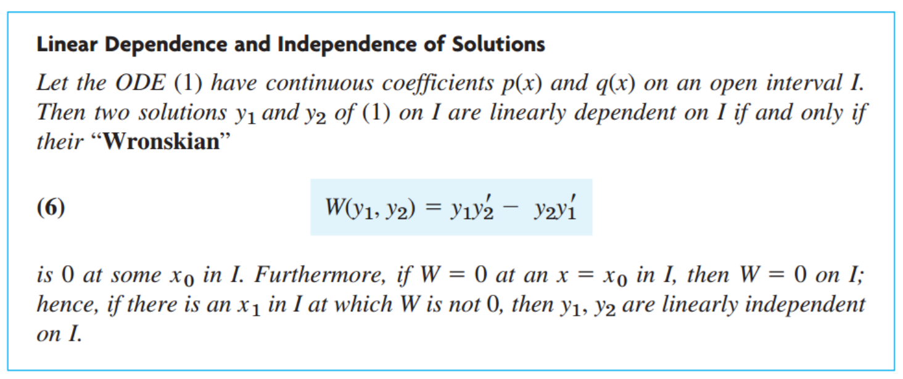
그래서 Wronskian이라는 것을 정의합니다.
말이 어렵게 설명되어있지만,
만약에 모든 범위안에 있는 x에 대해서 W(y1,y2) = 0 이라면,
y1,y2는 Linearly dependent하므로,
y = c1y1+ c2y2 는 사실 Genearl solution 이 아니라
y = C y1 이렇게 한개의 해밖에 못구한 셈이라는 것입니다.
다르게 말하면??? W(y1,y2)가 0이 아니라면,
linearly independent로 두개의 해가 General solution이라는 것.
지금까지, 2nd order Linear ODE중에서, Homogeneous인것만 봤지만
이제, Non-Homogeneous 인 방정식을 풀어보자.
다시 살펴보면, r(x) = 0이면 Homogeneous, 아니면 Non-homogeneous 였다.
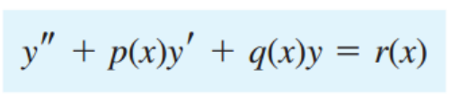
여기서, 진짜 수학자들은 대단한 방법을 사용한다,
바로 Genearl solution을 두개로 나누는 것이다.
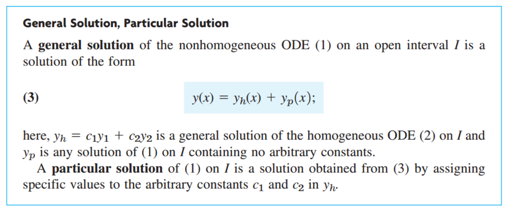
yh(x) 는 Homogeneous의 해이고, yp(x)는 particular solution이라고 부르는 새로운 해이다.
증명)
위식에서, 좌항을 L(y) 라고 하자. L(y) = r(x)
우리가 구한 Genearl 해를 대입한후, Linearity principle로 쪼갤 수 있다.
L(yh + yp) = L(yh) + L(yp) = r(x)
여기서, Homogeneous Linear ODE의 해 yh, L(yh) = 0
따라서,
L(yp) = r(x)
결국, 우리가 해를 구하고 싶은 2nd order ODE의 특정한 해 yp를 구한다면,
Genearl solution, y = yh(x) + yp(x) 로 표현 가능하다는 것이다.
다시, 우리가 한것을 조금 정리해보자.
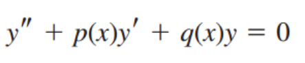
(1)
(2)
위의 Non-homogeneous(1) 의 특정한 해, Particular Solution, yp(x) 가 있다고 하자.
(1)의 General Solution은 (2)의 Genearl 해, yh(x) 와 yp(x)의 합으로 나타낼 수 있다는 것.
조금 뭔가 이상하지 않은가? (1)의 특정해 yp(x) 가 한개가 아닐 수 있지않을까?
yp1(x) + yp2(x) 이렇게 서로 linear 하지 않는 두개의 해로 표현 할 수 있는거 아니야?
이런 질문이 아마 떠오를 것이다.
한번,
yh(x) + yp(x) 가 유일한 Genearl solution임을 증명해보자.
(1)
(2)
(1)의 genearl solution y, particular solution yp 가 있다고 해보자.
(1) 의 좌항을 L(y)라고 하면, L(y) = r(x), 두해를 대입하면,
L(y) = r(x), L(yp) = r(x)
두 식을 빼보자, L(y)-L(yp) = 0
Principle of Linearity로 L(y-yp) = 0
응? L(y) = 0이라는 식은 2nd order Homogeneous Linear ODE아닌가??
우리가 linear ODE의 해는 두가지 y1,y2로 존재하고 Genearl soltuion yh = c1y1 + c2y2 임을 전시간에 배웠다.
따라서, yh = c1y1 + c2y2 = y-yp 인 것.
결국,,,,,
Genearl solution of Non homogeneou y
y* = yh + yp = c1y1 + c2y2 + yp
질문의 끝은 다음질문이다 끝없는 질문들...
자 y = yh + yp 인것은 알겠는데, yh는 구할 수 있고, yp는 어케 구하지?
1. Method of Undetermined Coefficients.
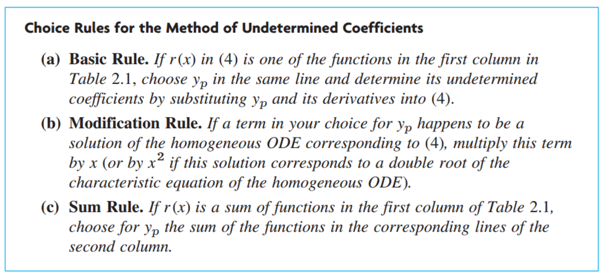
우리가, 2nd homogeneous ODE에서 y=e^x라고 생각하고 풀었듯이,
yp(x)도 결국 r(x)와 비슷한 형태이어야 한다는 생각으로부터, 다음 표를 통해서 derive가능하다.
![[Engineering Mathematics] Ch 2. 2st-order ODE - part 3](./images/img-006.png)
Example)
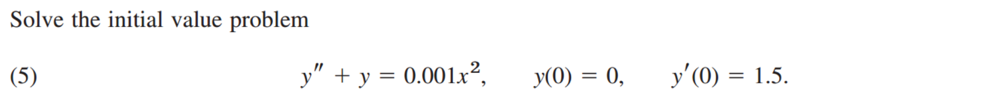
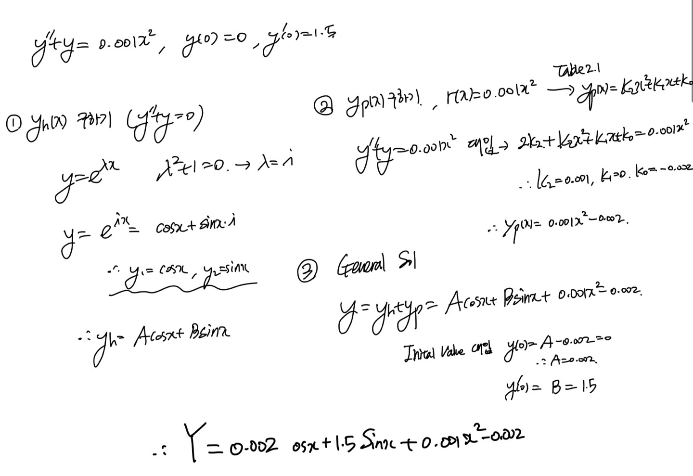
2. Method of Variation of Parameters
위 방법에는 당연히 한계가 있겠죠? Table에 없는 형태의 r(x)면 못푼다는 것;;;
따라서, 새로운 방법은 다음과 같이 정의됩니다.
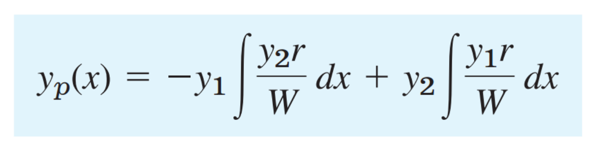
W(y1,y2) = y1 y2' - y1' y2
PROVE)
(시작은,
1st order ODE에서 Integrating Factor, 2nd order ODE에서 중근을 위한 Reduction of order과 동일하다)
그니까, 방정식을 만족하도록, 함수를 곱해주는 것.
Homogeneous solution 의 두해 y1,y2가 있을때,
yp = u(x) y1(x) + v(x) y2(x) 라고 새로운 함수 u(x), v(x)를 우리가 곱해주자
즉, 우리가 구하고 싶은 방벙식을 만족하는 u(x), v(x)를 찾으면 되는 것.
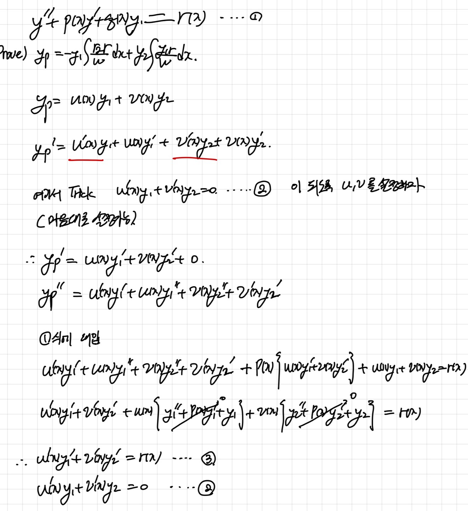
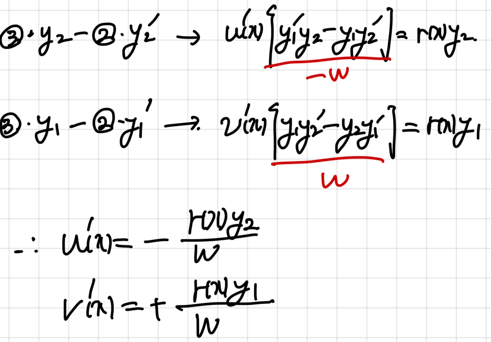
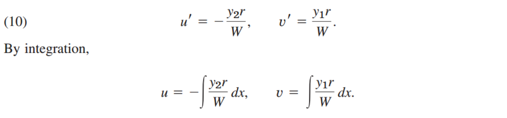
결국 위와 같은 식으로 구할 수있다.{% endraw %}